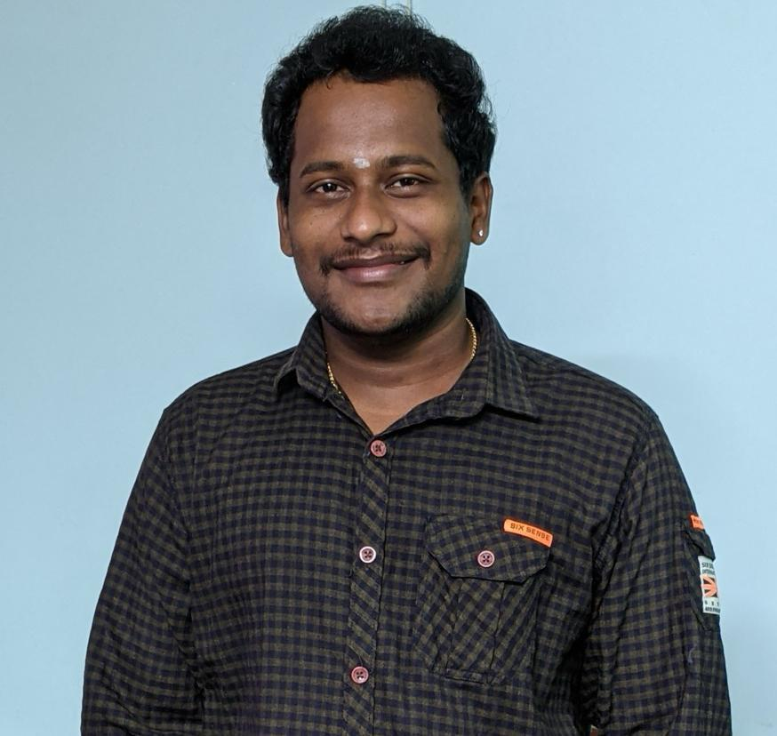

Sai Revanth Sadhu

Summary
Senior Software Engineer with 7+ years of experience excelling in managing and optimizing production
applications. Demonstrates expertise in TSO/ISPF, JCL, and Z/OS, driving system performance
improvements and production efficiency. Recognized for exceptional performance and a collaborative
approach to enhancing team capabilities through peer reviews and knowledge transfer.
Education
- Post Graduation in Computer Software and Database Development at Loyalist college,
Toronto, Canada. (2024-2025)
- Bachelor of Technology, Electronics & Communication Engineering at Vishnu Institute of Technology,
Andhra Pradesh, India. (2013-2017)
- Senior Secondar Education, NRI Junior College, Andhra Pradesh, India. (2011-2013)
Work Experience
-
Senior Software Engineer - Precisely.
Aug 2021 - Till Date
-
Manage Ironstream application in production, ensuring seamless data collection and
transformation.
-
Conduct peer reviews for junior team members, enhancing code quality and
documentation.
- Awarded Stellar Performer for three consecutive quarters for exceptional performance.
- Analyze and resolve defects during testing, proposing effective solutions.
- Prepare and deliver knowledge transfer plans to team members as needed.
- Streamlined data collection, enhancing system performance metrics analysis.
- Boosted production efficiency by refining Ironstream application workflows.
-
Software Engineer - CGI.
Dec 2019 - Aug 2021
- ARICS (Accounts Receivable Inquiry Collection System) involves event processing,
generating notices, pricing, rating, and payment processing.
- Developer for ARICS application.
- Involved in design, coding, unit testing, SIT, SFT, and deployment.
- Fixed many defects found during testing.
-
Software Development Senior Associate - NTT DATA.
Nov 2017 - Nov 2019
- MPMCIS System handles customer information system including personal and
financial data.
- Analyst for a team engaged in generating accounts and maintaining customer data.
- Responsible for MPMCIS application team in the production environment.
- Coding & unit testing for projects & maintenance requests.
- Handling production tickets and incidents within SLA.
- Done many peer reviews for components & documents of junior teammates.
- Provided KT plans as required.
- Night support for on-call batch for MPMCIS and solving jobs within turnaround time.
Skills
COBOL: ★★★★★
JCL : ★★★★★
DB2 : ★★★★★
VSAM : ★★★★★
TSO/ISPF: ★★★★★
OPC : ★★★★★
TIVOLI: ★★★★★
Achievements
- Received Best Employee award for 2 consecutive quarters for best performance in CGI.
- Gold medals as Branch Topper for all four consecutive years in B-Tech.
- Top 20 nationwide in AMCAT Aspiring Minds Business Empowerment.
- Appreciation award for resolving many pending items within two months at NTT DATA.
- First prize in Robothon ROBOFEST at IIIT-H for presenting real-time ROBOFISH.
- Head of the team building activities committee along with SOX team.
Other